你有一条错过的信息，请快速查看！
CHAPTER 1 COMPLETE


要不要和我一起看看前方有什么？ （请按住 Space——）
CHAPTER 2 COMPLETE
按 Space 进入
CHAPTER 3 COMPLETE
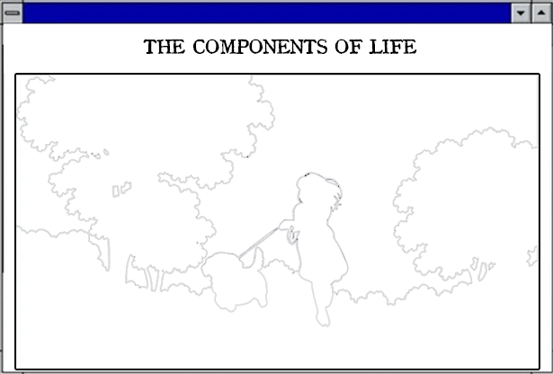
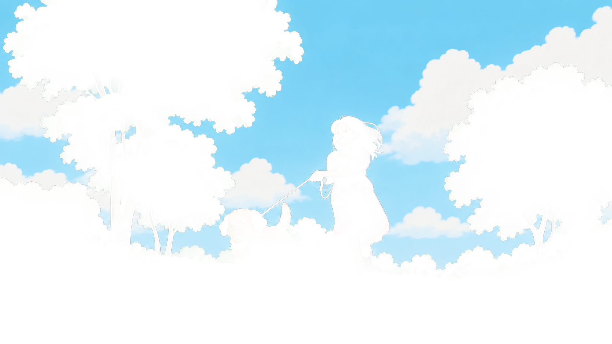
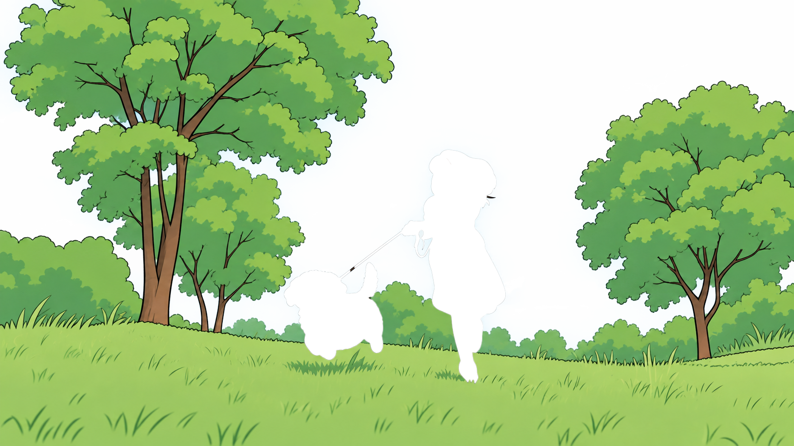
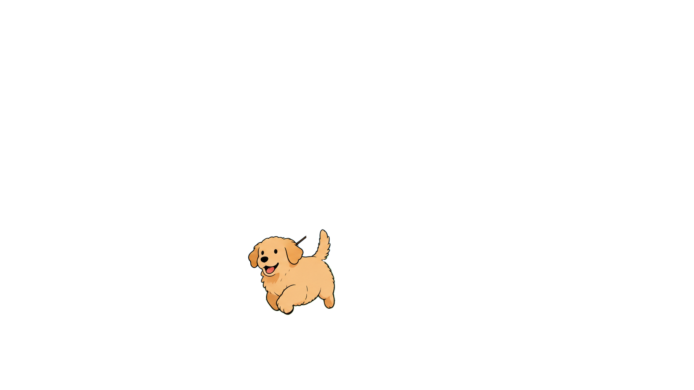
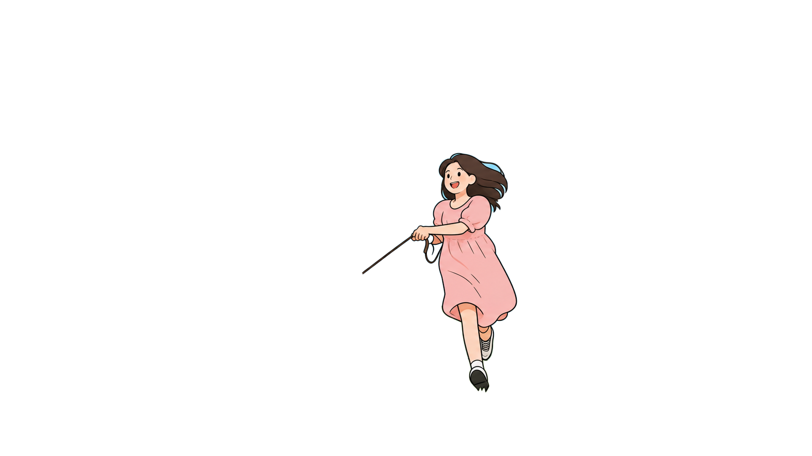
据说拖拽顶端图标完成拼图，会有神奇的事情发生呐。
啊本咪在睡觉，不要打扰我呀awwww，或许你可以给我放点歌曲？
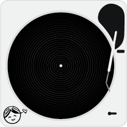
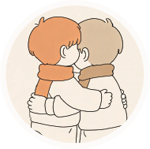
Record 1 · audio pending
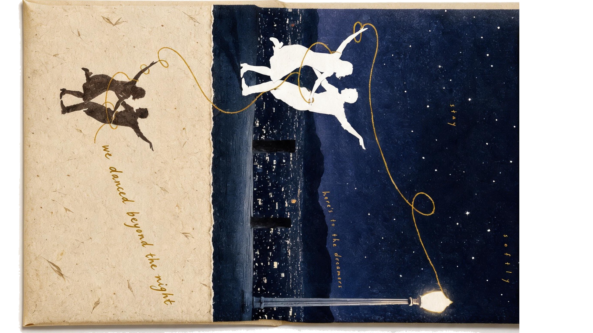
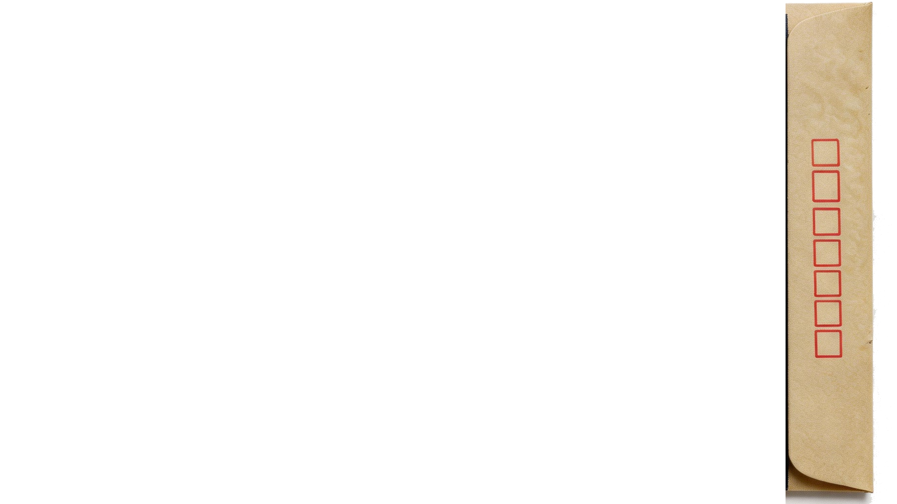
鼠标从下至上拖拽，阅读信件
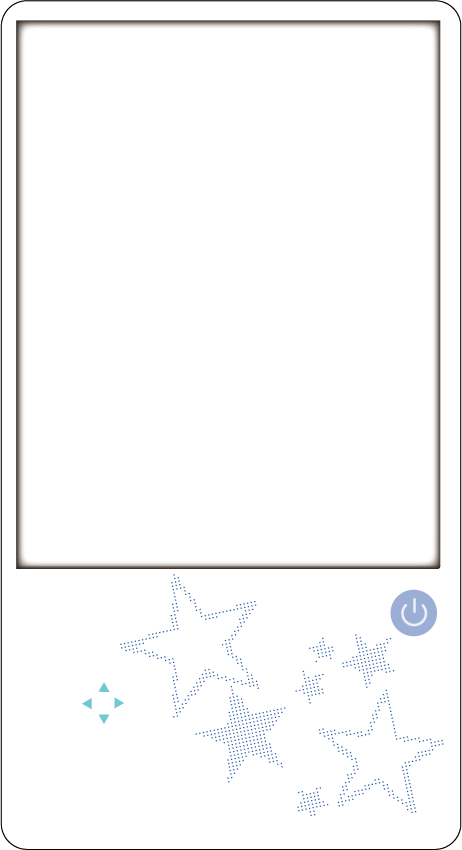
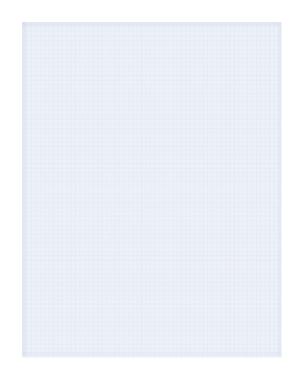
GAME OVER
another point of view
你以为的 / 自动想法 / 消极解释
实际的 / 另一种解释 / 更完整解释
点击眼镜查看另一层文字 · 滑动右页翻页
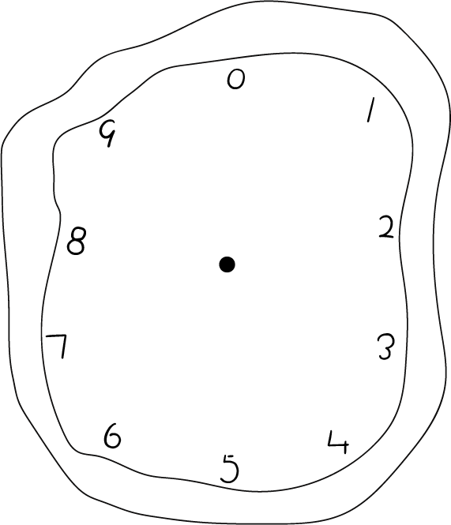
准备
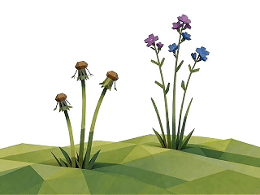
点击左下花丛，让故事开始。

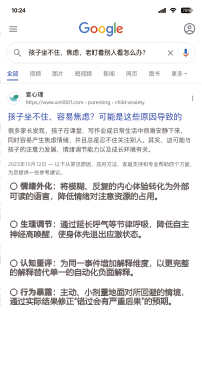